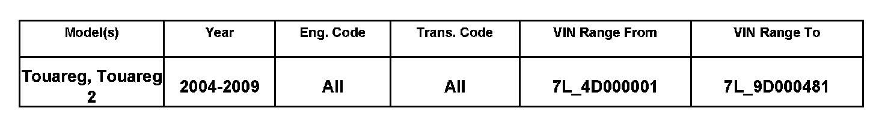
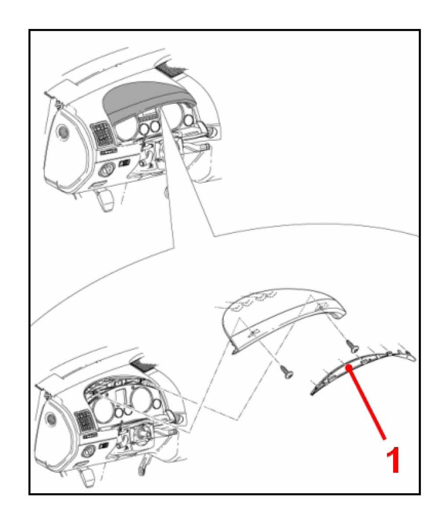
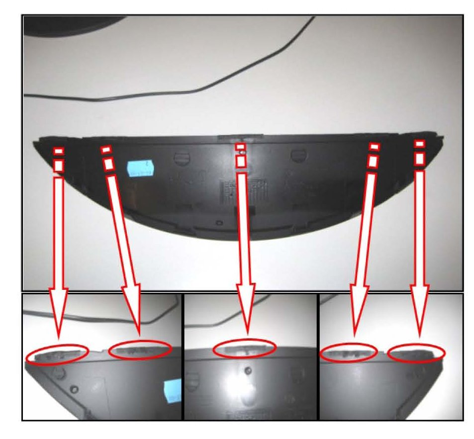
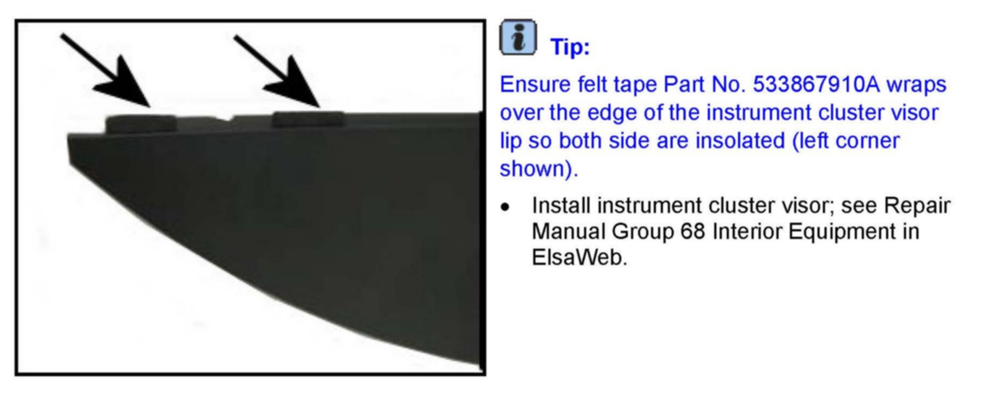
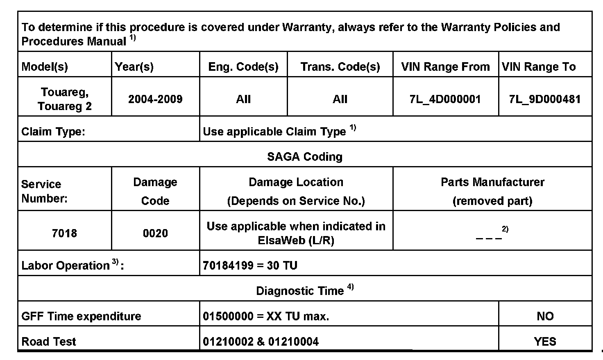
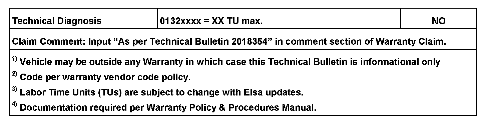

Interior - Creak/Crack Noises From Instrument Cluster
68 08 03Aug. 19, 2008
2018354

Vehicle Information
Condition
Instrument Cluster Noises
Creaking/cracking noises from instrument cluster area while driving.
Technical Background
Improper tolerances between the instrument cluster lens and the instrument cluster visor.
Production Solution
As of VIN WVGAM77L59D000482, a felt tape was applied to the edges of the instrument cluster visor (see Fig. 2).
Service
^ Apply a felt tape Part No. 533867910A the edges of instrument cluster visor as follows:

^ Remove instrument cluster visor; see Repair Manual Group 68 Interior Equipment in ElsaWeb.

^ Invert instrument cluster visor.

^ At the points of contact of instrument cluster visor, Apply 5 felt tape pieces, 25mm long (1 in.), Part No. 533867910A around edge, as shown (ellipses).


Warranty
Required Parts and Tools
No Special Tools required.
Additional Information
All part and service references provided in this Technical Bulletin are subject to change and/or removal.
Always check with your Parts Dept. and Repair Manuals for the latest information.